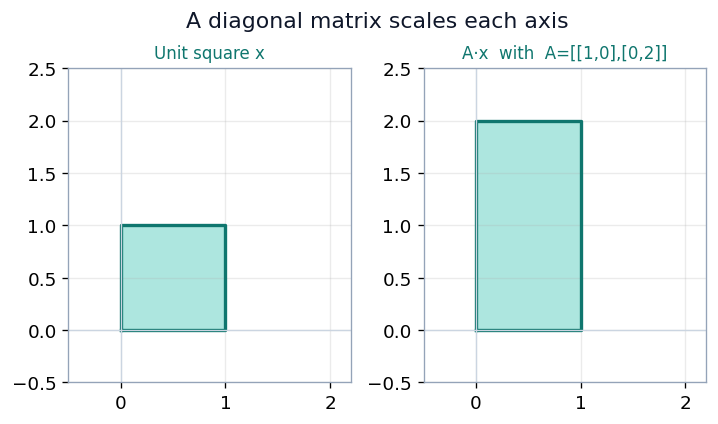
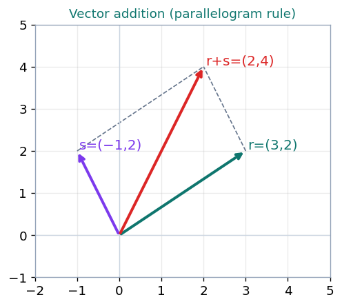

Scalars, vectors, matrices, norms and SVD — the language every tensor speaks.
Module 1 · Lecture notes by Dr. Abdulkarim Albanna
Foundations Math ~30 minPrerequisites: basic algebra. If you can add, multiply and rearrange simple equations, you are ready — every new object is introduced from scratch.
A scalar is a single numerical value used to scale vectors and matrices. It is an element of a field, typically the real numbers \(\mathbb{R}\) or the complex numbers \(\mathbb{C}\). Scalars multiply each component of a vector or each entry of a matrix, changing their magnitude without changing their direction. They also appear in dot products (which return a single number) and in linear transformations (as scaling factors).
Let \(v=\begin{bmatrix}2\\3\\-1\end{bmatrix}\) and \(c=4\).
Let \(A=\begin{bmatrix}1&2\\3&4\end{bmatrix}\) and \(k=-2\).
Let \(u=\begin{bmatrix}1\\2\\3\end{bmatrix}\) and \(v=\begin{bmatrix}4\\-5\\6\end{bmatrix}\).
The result is a single scalar: \(12\).
For a position vector \(p=\begin{bmatrix}5\\7\end{bmatrix}\), scaling by \(0.5\) shrinks it toward the origin:
Let \(A=\begin{bmatrix}1&0\\0&2\end{bmatrix}\) (a diagonal scaling matrix) and \(x=\begin{bmatrix}3\\4\end{bmatrix}\).
The transformation leaves the first component unchanged and doubles the second.

A vector is an ordered list of numerical values. In machine learning it represents data points, feature sets, model parameters, or predictions, and is usually high-dimensional.
Vectors solve systems of equations. The system \(2a+3b=8,\quad 10a+b=13\) is written compactly as a matrix equation:
Vectors add component-wise, and geometrically by the parallelogram (tip-to-tail) rule. With \(r=\begin{bmatrix}3\\2\end{bmatrix}\) and \(s=\begin{bmatrix}-1\\2\end{bmatrix}\):

Scaling stretches (\(2r\)), shrinks (\(\tfrac{1}{2}r\)), or reverses (\(-r\)) a vector along the same line:
The dot product of two vectors multiplies matching components and sums the results. For \(r=\begin{bmatrix}3\\2\end{bmatrix}\) and \(s=\begin{bmatrix}-1\\2\end{bmatrix}\):
The dot product is the workhorse of deep learning — a single neuron computes the dot product of its inputs with its weights before applying a non-linearity.
| Property | Statement |
|---|---|
| Commutative (addition) | \(r + s = s + r\) |
| Associative (addition) | \((r + s) + t = r + (s + t)\) |
| Commutative (dot product) | \(r \cdot s = s \cdot r\) |
| Distributive (dot product) | \(r \cdot (s + t) = r \cdot s + r \cdot t\) |
| Associative over scalar mult. | \(r \cdot (a s) = a(r \cdot s)\) |
A worked example for each property. Throughout, use \(r=\begin{bmatrix}3\\2\end{bmatrix},\ s=\begin{bmatrix}-1\\2\end{bmatrix},\ t=\begin{bmatrix}4\\1\end{bmatrix},\) scalar \(a=2\).
A tensor is an array of numbers arranged on a grid with any number of axes (dimensions). It is the general object that unifies everything we have seen so far — the number of dimensions is called the tensor's rank.
| Dimensions (rank) | Object | Example |
|---|---|---|
| 0 | scalar | \(5\) |
| 1 | vector | \(\begin{bmatrix}2 & 3 & -1\end{bmatrix}\) |
| 2 | matrix | \(\begin{bmatrix}1&2\\3&4\end{bmatrix}\) |
| 3 or more | higher-order tensor | an RGB image: height × width × channels |
They are the core data structure of frameworks like PyTorch and TensorFlow. For example, a batch of color images is a 4-D tensor with shape \((\text{batch} \times \text{height} \times \text{width} \times \text{channels})\).
To multiply \(A\) (\(m\times p\)) by \(B\) (\(p\times n\)), take the dot product of each row of \(A\) with each column of \(B\). The result \(C\) is \(m\times n\), with entries
The inner dimensions must match — \((m\times p)(p\times n) = (m\times n)\).
\(A=\begin{bmatrix}1&2&3\\4&5&6\end{bmatrix},\qquad B=\begin{bmatrix}7&8\\9&10\\11&12\end{bmatrix}\)
Because the definition uses rows of the left matrix and columns of the right, matrix multiplication is not commutative in general: \(AB \neq BA\).
The identity matrix \(I\) is a square matrix with ones on the main diagonal and zeros elsewhere. It is the multiplicative identity: any matrix multiplied by \(I\) is unchanged. The size is written as a subscript, \(I_n\) for the \(n\times n\) identity.
For \(A=\begin{bmatrix}2&3\\4&5\end{bmatrix}\):
The identity matrix is used to initialize parameters. For example, initializing the weights of a recurrent neural network (RNN) with an identity matrix helps stabilize training by keeping gradients from vanishing or exploding early on.
The inverse of a square matrix \(A\), written \(A^{-1}\), is the matrix that "undoes" \(A\):
It is the matrix analogue of dividing by a number. Its main use is solving linear systems.
Think of \(A\) as a machine that transforms a vector: put \(x\) in and it returns a moved vector \(Ax\). The inverse \(A^{-1}\) runs that machine backwards — it takes \(Ax\) and returns the original \(x\). Just as multiplying by \(5\) then by \(\tfrac{1}{5}\) leaves a number unchanged, applying \(A\) then \(A^{-1}\) leaves a vector unchanged: \(A^{-1}(Ax) = I_n x = x\). The identity \(I_n\) is the "do-nothing" matrix.
With \(A=\begin{bmatrix}1&2\\3&4\end{bmatrix},\ A^{-1}=\begin{bmatrix}-2&1\\1.5&-0.5\end{bmatrix}\), start from \(x=\begin{bmatrix}1\\1\end{bmatrix}\):
— back to the original vector.
A matrix is invertible only if it is square and full rank. It has no inverse when:
For \(A=\begin{bmatrix}a&b\\c&d\end{bmatrix}\), the inverse (valid only when \(\det A = ad-bc \neq 0\)) is
Take \(A=\begin{bmatrix}1&2\\3&4\end{bmatrix}\), so \(\det A = 1\cdot 4 - 2\cdot 3 = -2\):
Check:
which confirms the result. Row-by-row: \((-2)(1)+(1)(3)=1\), \((-2)(2)+(1)(4)=0\), \((1.5)(1)+(-0.5)(3)=0\), \((1.5)(2)+(-0.5)(4)=1\).
A norm measures the "size" of a vector — intuitively, its distance from the origin. Formally, the \(L^p\) norm is
| Norm | Definition | Intuition |
|---|---|---|
| 1-norm (Manhattan) | \(\lVert x\rVert_1 = \displaystyle\sum_{i=1}^{n} |x_i|\) | "total length" of the vector |
| 2-norm (Euclidean) | \(\lVert x\rVert_2 = \sqrt{\displaystyle\sum_{i=1}^{n} |x_i|^2}\) | shortest distance from the origin |
| \(\infty\)-norm (max) | \(\lVert x\rVert_\infty = \displaystyle\max_{1\le i\le n} |x_i|\) | largest component in magnitude |
Vector norms of \(X=(-1,\ 4,\ 2)\):
Dot product via norms. \(\ x^\top y = \lVert x\rVert_2\,\lVert y\rVert_2\,\cos\theta\), where \(\theta\) is the angle between \(x\) and \(y\).
| Norm | Definition | Intuition |
|---|---|---|
| 1-norm (column-sum) | \(\lVert A\rVert_1 = \displaystyle\max_{1\le j\le n}\sum_{i=1}^{n} |a_{ij}|\) | largest column sum |
| \(\infty\)-norm (row-sum) | \(\lVert A\rVert_\infty = \displaystyle\max_{1\le i\le n}\sum_{j=1}^{n} |a_{ij}|\) | largest row sum |
| Frobenius (2-norm) | \(\lVert A\rVert_F = \sqrt{\displaystyle\sum_{i,j} |a_{ij}|^2}\) | entrywise Euclidean length |
Matrix 1-norm and \(\infty\)-norm. Let \(A=\begin{bmatrix}7&1&8\\4&5&8\\10&4&2\end{bmatrix}\).
1-norm (sum each column, take the largest):
\(\infty\)-norm (sum each row, take the largest):
Just as an integer can be broken into prime factors (\(12 = 2\times 2\times 3\)), a matrix can be decomposed to reveal properties hidden in its array of numbers. Eigendecomposition breaks a matrix into eigenvectors and eigenvalues.
An eigenvector of a square matrix \(A\) is a nonzero vector \(v\) whose direction is unchanged by \(A\) — multiplication only scales it:
The scalar \(\lambda\) is the corresponding eigenvalue. If \(v\) is an eigenvector, so is any rescaled \(sv\) (same eigenvalue) — so we usually take unit eigenvectors.
Let \(A=\begin{bmatrix}0&1\\-2&-3\end{bmatrix}\). Solve \(\det(A-\lambda I) = 0\):
Each eigenvalue is then substituted back into \((A-\lambda I)v = 0\) to find its eigenvector.
SVD decomposes any \(m\times n\) matrix into three smaller matrices:
| Factor | What it is |
|---|---|
| \(A\) | input data matrix (\(m\) documents \(\times\) \(n\) terms). |
| \(U\) | left singular vectors (\(m\) documents \(\times\) \(r\) concepts). |
| \(\Sigma\) | singular values — diagonal, the strength of each concept (\(r = \text{rank}\)). |
| \(V\) | right singular vectors (\(n\) terms \(\times\) \(r\) concepts). |
The singular values are the square roots of the eigenvalues, sorted in descending order, which makes SVD a core tool for dimensionality reduction.
Step 1 — Form \(AA^\top\) and \(A^\top A\).
Step 2 — Eigenvalues (same for both): solve \(\lambda^2 - 100\lambda = 0 \Rightarrow \lambda = 0\) or \(\lambda = 100\).
Step 3 — Left singular vectors \(U\) (eigenvectors of \(AA^\top\), normalized, sorted by \(\lambda\)):
Step 4 — Right singular vectors \(V^\top\) (eigenvectors of \(A^\top A\)):
Step 5 — Singular values \(=\sqrt{\lambda}\), largest first:
Result.
(The small rounding gap comes from using 2-decimal singular vectors.)
Let \(A\) be a documents \(\times\) terms matrix (row per document, column per word). Its SVD reveals hidden topics: \(U\) maps documents \(\to\) concepts, \(V\) maps terms \(\to\) concepts, and the singular values in \(\Sigma\) rank those concepts by importance. Keeping only the top few gives a compact, denoised representation of the corpus. The same machinery underlies PCA and low-rank model compression, where big weight matrices are approximated by the product of two thin ones.
Three problems to cement the mechanics. Work each one on paper before opening the solution — the arithmetic is the point.
Compute the inverse of \(A=\begin{bmatrix}2&1\\7&4\end{bmatrix}\) and verify that \(A^{-1}A = I\).
Row-by-row: \((4)(2)+(-1)(7)=1\), \((4)(1)+(-1)(4)=0\), \((-7)(2)+(2)(7)=0\), \((-7)(1)+(2)(4)=1\). Since the determinant is 1, the inverse is just the "swap and negate" pattern with no division: \(A^{-1}=\begin{bmatrix}4&-1\\-7&2\end{bmatrix}\).
Compute the Frobenius norm of \(\begin{bmatrix}3&4\\0&12\end{bmatrix}\).
Square every entry, add them up, take the square root: \(\sqrt{169} = 13\).
Multiply \(\begin{bmatrix}1&2\\3&4\end{bmatrix}\begin{bmatrix}3\\4\end{bmatrix}\) (a \(2\times 2\) matrix times a column vector).
Each output entry is a row dotted with the vector: row 1 gives \(3+8=11\), row 2 gives \(9+16=25\). Result: \(\begin{bmatrix}11\\25\end{bmatrix}\).
Next up: Module 2 — Numerical Computation, where we turn from exact algebra to the realities of finite-precision arithmetic: overflow, underflow, conditioning and gradient-based optimisation — the numerical bedrock on which training actually runs.